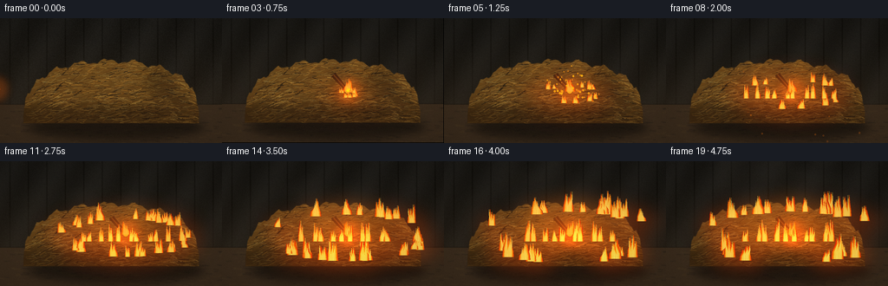
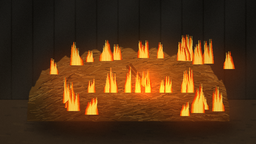
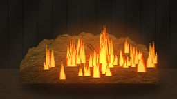
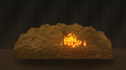
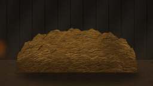

CODING AGENTS AS PIXEL WORLD MODELS
traex/DeepSeek-V4.1-Flash · phygen_143
点击播放 · 原生 RGB 像素
逐轮保存的候选
回放视频、检查图与代码变化。
每份候选均可单独播放。实际图片检查记录在下方工具轨迹中。
候选 01播放与检查图
点击播放 · 原生 RGB 像素

展开代码变化
--- 上一保存版本
+++ 本次保存版本
@@ -0,0 +1,416 @@
+"""Procedural render of a burning stick landing in a hay pile."""
+
+from pathlib import Path
+import math
+
+import numpy as np
+from PIL import Image, ImageDraw, ImageFilter
+
+import artifact_io
+
+
+CASE_DIR = Path(__file__).resolve().parent
+W, H = 256, 144
+SS = 3
+RW, RH = W * SS, H * SS
+FRAMES = 20
+FPS = 4.0
+SEED = 143
+
+
+def srgb_lerp(a, b, t):
+ return tuple(int(round(a[i] + (b[i] - a[i]) * t)) for i in range(3))
+
+
+def make_background():
+ """Dark barn wall, earthen floor, and soft haze."""
+ rng = np.random.default_rng(SEED)
+ y = np.linspace(0.0, 1.0, RH, dtype=np.float32)[:, None]
+ x = np.linspace(0.0, 1.0, RW, dtype=np.float32)[None, :]
+
+ top = np.array([25, 24, 21], dtype=np.float32)
+ bottom = np.array([49, 39, 27], dtype=np.float32)
+ blend = (0.08 + 0.92 * y ** 1.4)[..., None]
+ arr = top + (bottom - top) * blend
+ arr = arr + (3.5 * np.sin(x * 29.0 + y * 9.0))[..., None]
+
+ # Vertical timber boards, mostly lost in shadow.
+ for board_x in range(-30, RW + 60, 64):
+ edge = np.exp(-((x * RW - board_x) / 2.2) ** 2)
+ arr = arr - (edge * (7.0 + 2.0 * np.sin(y * 8.0)))[..., None]
+ grain = rng.normal(0.0, 2.0, (RH, RW, 1))
+ arr = np.clip(arr + grain, 0, 255).astype(np.uint8)
+ image = Image.fromarray(arr, "RGB")
+ draw = ImageDraw.Draw(image, "RGBA")
+
+ # Earth floor with faint scattered chaff.
+ horizon = int(RH * 0.69)
+ floor = Image.new("RGBA", (RW, RH), (0, 0, 0, 0))
+ fd = ImageDraw.Draw(floor)
+ fd.rectangle((0, horizon, RW, RH), fill=(59, 44, 29, 255))
+ for i in range(280):
+ px = rng.uniform(0, RW)
+ py = rng.uniform(horizon + 2, RH)
+ length = rng.uniform(2, 10) * SS
+ col = rng.choice([(77, 56, 34, 95), (36, 28, 21, 100), (92, 67, 37, 70)])
+ fd.line((px, py, px + length, py + rng.uniform(-1, 2)), fill=tuple(col), width=1)
+ floor = floor.filter(ImageFilter.GaussianBlur(0.45 * SS))
+ image.alpha_composite(floor) if image.mode == "RGBA" else image.paste(floor, (0, 0), floor)
+
+ # A shallow shadow under the pile.
+ shadow = Image.new("RGBA", (RW, RH), (0, 0, 0, 0))
+ sd = ImageDraw.Draw(shadow)
+ sd.ellipse((32 * SS, 111 * SS, 235 * SS, 140 * SS), fill=(9, 7, 5, 145))
+ shadow = shadow.filter(ImageFilter.GaussianBlur(5.0 * SS))
+ image.paste(shadow, (0, 0), shadow)
+ return image.convert("RGB")
+
+
+def pile_mask():
+ mask = Image.new("L", (RW, RH), 0)
+ draw = ImageDraw.Draw(mask)
+ points = []
+ # An asymmetric, soft-shouldered mound.
+ for i in range(81):
+ a = math.pi + i * math.pi / 80
+ x = 128 + math.cos(a) * 101
+ base_y = 118
+ rise = (max(0.0, -math.sin(a)) ** 0.62) * 69
+ wobble = 2.4 * math.sin(i * 0.77) + 1.2 * math.sin(i * 2.13)
+ y = base_y - rise + wobble
+ if x < 60:
+ y += (60 - x) * 0.10
+ if x > 211:
+ y += (x - 211) * 0.16
+ points.append((int(round(x * SS)), int(round(y * SS))))
+ points.extend([(229 * SS, 121 * SS), (24 * SS, 121 * SS)])
+ draw.polygon(points, fill=255)
+ return mask.filter(ImageFilter.GaussianBlur(0.35 * SS))
+
+
+def make_hay():
+ """Render thousands of small, directional straws clipped to a mound."""
+ rng = np.random.default_rng(SEED + 17)
+ mask = pile_mask()
+ layer = Image.new("RGBA", (RW, RH), (0, 0, 0, 0))
+ draw = ImageDraw.Draw(layer, "RGBA")
+
+ # Dense base colors make the pile read even at thumbnail size.
+ base = Image.new("RGBA", (RW, RH), (0, 0, 0, 0))
+ bd = ImageDraw.Draw(base)
+ for yy in range(38 * SS, 123 * SS, 2 * SS):
+ t = (yy / SS - 38) / 85
+ col = srgb_lerp((111, 77, 30), (72, 46, 19), min(1, t * 0.72))
+ bd.rectangle((18 * SS, yy, 238 * SS, yy + 2 * SS), fill=(*col, 255))
+ base.putalpha(mask)
+ layer.alpha_composite(base)
+
+ # Long straws follow the slope, with highlights and dark gaps.
+ for _ in range(2300):
+ x = rng.uniform(27, 230) * SS
+ y = rng.uniform(47, 121) * SS
+ if mask.getpixel((int(x), int(y))) < 40:
+ continue
+ length = rng.uniform(3.5, 13.5) * SS
+ angle = rng.normal(-0.12, 0.25)
+ # Straws near the edges fan outward.
+ if x < 75 * SS or x > 190 * SS:
+ angle += (x / SS - 128) * 0.0025
+ x2 = x + math.cos(angle) * length
+ y2 = y + math.sin(angle) * length
+ r = rng.random()
+ if r < 0.18:
+ color = (191, 139, 55, rng.integers(120, 205))
+ elif r < 0.54:
+ color = (151, 102, 36, rng.integers(150, 235))
+ elif r < 0.84:
+ color = (112, 70, 24, rng.integers(165, 245))
+ else:
+ color = (58, 38, 17, rng.integers(125, 210))
+ draw.line((x, y, x2, y2), fill=tuple(int(v) for v in color), width=max(1, int(rng.integers(1, 3) * SS / 2)))
+
+ # Scattered pale tips and tiny shadows add depth.
+ for _ in range(280):
+ x = rng.uniform(32, 224) * SS
+ y = rng.uniform(48, 118) * SS
+ if mask.getpixel((int(x), int(y))) < 80:
+ continue
+ length = rng.uniform(2, 7) * SS
+ draw.line((x, y, x + length, y + rng.uniform(-1.5, 1.5) * SS),
+ fill=(224, 176, 83, int(rng.integers(80, 160))), width=max(1, SS // 2))
+
+ layer.putalpha(Image.composite(layer.getchannel("A"), Image.new("L", (RW, RH), 0), mask))
+
+ # Form shadows at the base and right side.
+ shade = Image.new("RGBA", (RW, RH), (0, 0, 0, 0))
+ sd = ImageDraw.Draw(shade)
+ sd.rectangle((18 * SS, 101 * SS, 238 * SS, 124 * SS), fill=(22, 13, 7, 115))
+ sd.polygon([(186 * SS, 54 * SS), (234 * SS, 120 * SS), (196 * SS, 121 * SS),
+ (164 * SS, 68 * SS)], fill=(21, 13, 8, 80))
+ shade = shade.filter(ImageFilter.GaussianBlur(5 * SS))
+ shade.putalpha(Image.composite(shade.getchannel("A"), Image.new("L", (RW, RH), 0), mask))
+ layer.alpha_composite(shade)
+ return layer
+
+
+def glow_layer(size=(RW, RH)):
+ return Image.new("RGBA", size, (0, 0, 0, 0))
+
+
+def draw_flame(draw, cx, cy, width, height, phase, intensity=1.0, alpha=255):
+ """Layered flickering flame built from several tapered tongues."""
+ colors = [
+ ((191, 43, 8), 0.82),
+ ((244, 91, 8), 0.70),
+ ((255, 159, 18), 0.53),
+ ((255, 224, 98), 0.30),
+ ]
+ for layer, (color, width_scale) in enumerate(colors):
+ sway = math.sin(phase * 1.7 + layer * 0.9) * width * 0.12
+ for k in range(3):
+ off = (k - 1) * width * 0.24
+ fh = height * (0.72 + 0.13 * math.sin(phase * 2.3 + k * 2.1))
+ fw = width * width_scale * (0.80 + 0.14 * math.sin(phase + k))
+ tipx = cx + off + sway + math.sin(phase * 2.7 + k) * width * 0.12
+ tipy = cy - fh
+ a = int(alpha * (1.0 - layer * 0.10) * intensity)
+ pts = [
+ (cx + off - fw * 0.55, cy + 1),
+ (cx + off - fw * 0.48, cy - fh * 0.33),
+ (tipx - fw * 0.10, cy - fh * 0.72),
+ (tipx, tipy),
+ (tipx + fw * 0.13, cy - fh * 0.65),
+ (cx + off + fw * 0.52, cy - fh * 0.25),
+ (cx + off + fw * 0.58, cy + 1),
+ ]
+ draw.polygon(pts, fill=(*color, max(0, a)))
+
+
+def draw_stick(image, t):
+ """Animate the burning stick from lower left into the pile."""
+ draw = ImageDraw.Draw(image, "RGBA")
+ glow = glow_layer()
+ gd = ImageDraw.Draw(glow, "RGBA")
+
+ # Flight lasts until frame 3; impact lands near frame 4.
+ u = min(1.0, max(0.0, t / 0.75))
+ ease = 1.0 - (1.0 - u) ** 1.6
+ x0, y0 = -6.0, 82.0
+ x1, y1 = 145.0, 84.0
+ x = x0 + (x1 - x0) * ease
+ y = y0 + (y1 - y0) * ease - 54.0 * math.sin(math.pi * ease)
+ dx = (x1 - x0)
+ dy = (y1 - y0) - 54.0 * math.pi * math.cos(math.pi * ease)
+ length = math.hypot(dx, dy)
+ ux, uy = dx / length, dy / length
+ px, py = -uy, ux
+ stick_len = 25.0
+ tip = np.array([x, y])
+ tail = tip - np.array([ux, uy]) * stick_len
+ width = 3.1
+ poly = [
+ ((tail[0] + px * width) * SS, (tail[1] + py * width) * SS),
+ ((tail[0] - px * width) * SS, (tail[1] - py * width) * SS),
+ ((tip[0] - px * width * 0.65) * SS, (tip[1] - py * width * 0.65) * SS),
+ ((tip[0] + px * width * 0.65) * SS, (tip[1] + py * width * 0.65) * SS),
+ ]
+ draw.polygon(poly, fill=(66, 35, 16, 255))
+ draw.line((tail[0] * SS, tail[1] * SS, tip[0] * SS, tip[1] * SS),
+ fill=(105, 57, 23, 255), width=max(1, int(1.1 * SS)))
+ draw.line(((tail[0] - px * 0.6) * SS, (tail[1] - py * 0.6) * SS,
+ (tip[0] - px * 0.5) * SS, (tip[1] - py * 0.5) * SS),
+ fill=(153, 89, 38, 190), width=1)
+ draw.ellipse(((tip[0] - 2.8) * SS, (tip[1] - 2.8) * SS,
+ (tip[0] + 2.8) * SS, (tip[1] + 2.8) * SS),
+ fill=(255, 188, 42, 255))
+ draw_flame(draw, tip[0] * SS, tip[1] * SS, 8.5 * SS, 17.0 * SS,
+ phase=t * 25.0, intensity=1.0, alpha=235)
+
+ # Warm halo and smoke trail.
+ gd.ellipse(((tip[0] - 18) * SS, (tip[1] - 19) * SS,
+ (tip[0] + 18) * SS, (tip[1] + 18) * SS),
+ fill=(255, 105, 17, 74))
+ for i in range(6):
+ age = i / 6
+ sx = tip[0] - ux * (i * 4.8 + 5)
+ sy = tip[1] - uy * (i * 4.8 + 5) - 2 - i * 2.1
+ rr = (2.5 + i * 1.15) * SS
+ gd.ellipse((sx * SS - rr, sy * SS - rr, sx * SS + rr, sy * SS + rr),
+ fill=(55, 45, 37, int(54 * (1 - age) + 8)))
+ glow = glow.filter(ImageFilter.GaussianBlur(5.0 * SS))
+ image.paste(glow, (0, 0), glow)
+ return image, (x, y), t < 0.86
+
+
+def draw_spread_fire(image, t):
+ """Ignite the hay pile progressively from the impact point."""
+ if t < 0.72:
+ return image
+ draw = ImageDraw.Draw(image, "RGBA")
+ glow = glow_layer()
+ gd = ImageDraw.Draw(glow, "RGBA")
+
+ burn_age = max(0.0, t - 0.72)
+ spread = min(1.0, burn_age / 3.35)
+ reach = 8 + 105 * spread ** 0.72
+ source = np.array([145.0, 82.0])
+ rng = np.random.default_rng(SEED + 99)
+ sites = []
+ for i in range(30):
+ ang = rng.uniform(0, 2 * math.pi)
+ rad = rng.uniform(0, 1) ** 0.65
+ sx = 145 + math.cos(ang) * reach * (0.70 + 0.30 * rad)
+ sy = 88 + math.sin(ang) * reach * 0.27
+ if 26 < sx < 230 and 45 < sy < 116:
+ sites.append((sx, sy, rng.uniform(0.65, 1.25)))
+
+ # Outer glow appears before individual flame tongues.
+ for sx, sy, scale in sites:
+ rr = (14 + 11 * scale) * SS
+ a = int(30 + 45 * spread)
+ gd.ellipse((sx * SS - rr, sy * SS - rr * 0.75,
+ sx * SS + rr, sy * SS + rr * 0.75), fill=(255, 78, 8, a))
+ gd.ellipse(((source[0] - (20 + 42 * spread)) * SS,
+ (source[1] - (17 + 30 * spread)) * SS,
+ (source[0] + (20 + 42 * spread)) * SS,
+ (source[1] + (12 + 18 * spread)) * SS),
+ fill=(255, 112, 10, int(35 + 38 * spread)))
+ glow = glow.filter(ImageFilter.GaussianBlur(12.0 * SS))
+ image.paste(glow, (0, 0), glow)
+
+ # Main flames grow from a few tongues to a wall of fire.
+ draw = ImageDraw.Draw(image, "RGBA")
+ for j, (sx, sy, scale) in enumerate(sites):
+ if j % 3 == 0 or spread > 0.42:
+ h = (7 + 22 * spread) * scale * (0.82 + 0.18 * math.sin(t * 15 + j))
+ w = (4.0 + 5.5 * spread) * scale
+ draw_flame(draw, sx * SS, sy * SS, w * SS, h * SS,
+ phase=t * 18 + j * 1.9, intensity=0.70 + 0.30 * spread,
+ alpha=int(210 + 40 * spread))
+
+ # Hot central core once the fire is established.
+ if spread > 0.28:
+ for j in range(10):
+ sx = 94 + j * 11 + 3 * math.sin(j * 2.7 + t * 5)
+ h = (13 + 17 * spread) * (0.75 + 0.25 * math.sin(t * 13 + j))
+ draw_flame(draw, sx * SS, 92 * SS, (4.5 + 2 * spread) * SS,
+ h * SS, phase=t * 21 + j, intensity=0.9, alpha=230)
+ return image
+
+
+def draw_embers(image, t):
+ if t < 0.70:
+ return image
+ rng = np.random.default_rng(SEED + 411)
+ draw = ImageDraw.Draw(image, "RGBA")
+ burst_t = t - 0.70
+ for i in range(52):
+ delay = rng.uniform(0, 0.24)
+ age = burst_t - delay
+ if age <= 0:
+ continue
+ speed = rng.uniform(20, 80)
+ ang = rng.uniform(-math.pi, 0.15)
+ vx = math.cos(ang) * speed
+ vy = math.sin(ang) * speed
+ x = 145 + vx * age
+ y = 84 + vy * age + 35 * age * age
+ life = rng.uniform(0.65, 1.65)
+ if age > life:
+ continue
+ fade = max(0.0, 1 - age / life)
+ rr = (0.45 + 0.85 * rng.random()) * SS
+ color = (255, int(95 + 120 * fade), 20, int(255 * fade))
+ draw.ellipse((x * SS - rr, y * SS - rr, x * SS + rr, y * SS + rr),
+ fill=color)
+ if rng.random() < 0.18:
+ draw.line((x * SS, y * SS, (x - vx * 0.035) * SS, (y - vy * 0.035) * SS),
+ fill=(255, 146, 30, int(160 * fade)), width=1)
+ return image
+
+
+def draw_smoke(image, t):
+ if t < 0.90:
+ return image
+ rng = np.random.default_rng(SEED + 721)
+ smoke = glow_layer()
+ sd = ImageDraw.Draw(smoke, "RGBA")
+ spread = min(1.0, (t - 0.85) / 3.7)
+ for i in range(38):
+ birth = rng.uniform(0.85, 3.9)
+ if t < birth:
+ continue
+ age = t - birth
+ x = rng.uniform(78, 211) + age * rng.uniform(-5, 5)
+ y = rng.uniform(55, 92) - age * rng.uniform(9, 19)
+ radius = (4 + age * 5.8) * SS
+ a = int(min(100, (26 + age * 20)) * (1 - min(0.7, age / 3.2)))
+ sd.ellipse((x * SS - radius, y * SS - radius * 0.65,
+ x * SS + radius, y * SS + radius * 0.65),
+ fill=(66, 58, 50, a))
+ smoke = smoke.filter(ImageFilter.GaussianBlur(7.0 * SS))
+ image.paste(smoke, (0, 0), smoke)
+ return image
+
+
+def warm_light(image, t):
+ if t < 0.70:
+ return image
+ spread = min(1.0, (t - 0.70) / 3.2)
+ arr = np.asarray(image, dtype=np.float32)
+ yy, xx = np.mgrid[0:RH, 0:RW].astype(np.float32)
+ cx = (145 + 6 * math.sin(t * 1.9)) * SS
+ cy = 91 * SS
+ dist = np.sqrt(((xx - cx) / (90 * SS)) ** 2 + ((yy - cy) / (66 * SS)) ** 2)
+ light = np.clip(1.0 - dist, 0, 1) ** 1.6
+ strength = (0.16 + 0.42 * spread) * light
+ warm = np.array([1.00, 0.47, 0.13], dtype=np.float32)
+ arr = arr + arr * strength[..., None] * warm
+ arr = np.clip(arr, 0, 255).astype(np.uint8)
+ return Image.fromarray(arr, "RGB")
+
+
+def render_frame(index, background, hay):
+ t = index / FPS
+ image = background.copy()
+ hay_frame = hay.copy()
+ image.paste(hay_frame, (0, 0), hay_frame)
+
+ # Slight camera impulse on impact, settling almost immediately.
+ impact = math.exp(-max(0, t - 0.72) * 9.0) if t >= 0.72 else 0.0
+ shake_x = int(round(math.sin(t * 83) * 1.2 * SS * impact))
+ shake_y = int(round(math.cos(t * 71) * 0.7 * SS * impact))
+ if shake_x or shake_y:
+ shifted = Image.new("RGB", (RW, RH), (0, 0, 0))
+ shifted.paste(image, (shake_x, shake_y))
+ image = shifted
+
+ image, tip, stick_visible = draw_stick(image, t)
+ image = draw_spread_fire(image, t)
+ image = draw_embers(image, t)
+ image = draw_smoke(image, t)
+ image = warm_light(image, t)
+
+ # Fine film grain and a restrained vignette keep it photographic.
+ rng = np.random.default_rng(SEED + index * 31)
+ arr = np.asarray(image, dtype=np.int16)
+ grain = rng.normal(0, 2.2, (RH, RW, 1)).astype(np.int16)
+ yy, xx = np.mgrid[0:RH, 0:RW].astype(np.float32)
+ nx = (xx - RW / 2) / (RW / 2)
+ ny = (yy - RH / 2) / (RH / 2)
+ vignette = 1.0 - 0.18 * np.clip((nx * nx + ny * ny) / 2, 0, 1)
+ arr = (arr + grain) * vignette[..., None]
+ image = Image.fromarray(np.clip(arr, 0, 255).astype(np.uint8), "RGB")
+ return image.resize((W, H), Image.Resampling.LANCZOS)
+
+
+def main():
+ background = make_background()
+ hay = make_hay()
+ frames = [np.asarray(render_frame(i, background, hay)) for i in range(FRAMES)]
+ artifact_io.save(frames, CASE_DIR)
+ print(f"wrote {len(frames)} frames to {CASE_DIR}")
+
+
+if __name__ == "__main__":
+ main()
候选 02播放与检查图
点击播放 · 原生 RGB 像素

展开代码变化
--- 上一保存版本
+++ 本次保存版本
@@ -256,13 +256,11 @@
source = np.array([145.0, 82.0])
rng = np.random.default_rng(SEED + 99)
sites = []
- for i in range(30):
- ang = rng.uniform(0, 2 * math.pi)
- rad = rng.uniform(0, 1) ** 0.65
- sx = 145 + math.cos(ang) * reach * (0.70 + 0.30 * rad)
- sy = 88 + math.sin(ang) * reach * 0.27
- if 26 < sx < 230 and 45 < sy < 116:
- sites.append((sx, sy, rng.uniform(0.65, 1.25)))
+ for i in range(42):
+ sx = 145 + rng.normal(0, reach * 0.42)
+ sy = 91 + rng.normal(0, reach * 0.11)
+ if 26 < sx < 230 and 68 < sy < 116:
+ sites.append((sx, sy, rng.uniform(0.55, 1.35)))
# Outer glow appears before individual flame tongues.
for sx, sy, scale in sites:
@@ -270,9 +268,9 @@
a = int(30 + 45 * spread)
gd.ellipse((sx * SS - rr, sy * SS - rr * 0.75,
sx * SS + rr, sy * SS + rr * 0.75), fill=(255, 78, 8, a))
- gd.ellipse(((source[0] - (20 + 42 * spread)) * SS,
- (source[1] - (17 + 30 * spread)) * SS,
- (source[0] + (20 + 42 * spread)) * SS,
+ gd.ellipse(((source[0] - (20 + 54 * spread)) * SS,
+ (source[1] - (17 + 37 * spread)) * SS,
+ (source[0] + (20 + 54 * spread)) * SS,
(source[1] + (12 + 18 * spread)) * SS),
fill=(255, 112, 10, int(35 + 38 * spread)))
glow = glow.filter(ImageFilter.GaussianBlur(12.0 * SS))
@@ -281,20 +279,21 @@
# Main flames grow from a few tongues to a wall of fire.
draw = ImageDraw.Draw(image, "RGBA")
for j, (sx, sy, scale) in enumerate(sites):
- if j % 3 == 0 or spread > 0.42:
- h = (7 + 22 * spread) * scale * (0.82 + 0.18 * math.sin(t * 15 + j))
- w = (4.0 + 5.5 * spread) * scale
+ if j % 2 == 0 or spread > 0.35:
+ h = (8 + 31 * spread) * scale * (0.78 + 0.22 * math.sin(t * 15 + j))
+ w = (3.6 + 5.8 * spread) * scale
draw_flame(draw, sx * SS, sy * SS, w * SS, h * SS,
phase=t * 18 + j * 1.9, intensity=0.70 + 0.30 * spread,
alpha=int(210 + 40 * spread))
- # Hot central core once the fire is established.
- if spread > 0.28:
- for j in range(10):
- sx = 94 + j * 11 + 3 * math.sin(j * 2.7 + t * 5)
- h = (13 + 17 * spread) * (0.75 + 0.25 * math.sin(t * 13 + j))
- draw_flame(draw, sx * SS, 92 * SS, (4.5 + 2 * spread) * SS,
- h * SS, phase=t * 21 + j, intensity=0.9, alpha=230)
+ # Taller tongues break up the silhouette and make the fire look wind-fed.
+ if spread > 0.12:
+ for j in range(11):
+ sx = 65 + j * 15.3 + 6 * math.sin(j * 3.2 + t * 2.8)
+ sy = 94 + 3 * math.sin(j * 1.8)
+ h = (10 + 30 * spread) * (0.72 + 0.30 * math.sin(t * 12 + j * 2.4))
+ draw_flame(draw, sx * SS, sy * SS, (3.3 + 2.7 * spread) * SS,
+ h * SS, phase=t * 22 + j * 1.4, intensity=0.88, alpha=245)
return image
@@ -304,7 +303,7 @@
rng = np.random.default_rng(SEED + 411)
draw = ImageDraw.Draw(image, "RGBA")
burst_t = t - 0.70
- for i in range(52):
+ for i in range(72):
delay = rng.uniform(0, 0.24)
age = burst_t - delay
if age <= 0:
@@ -319,7 +318,7 @@
if age > life:
continue
fade = max(0.0, 1 - age / life)
- rr = (0.45 + 0.85 * rng.random()) * SS
+ rr = (0.55 + 1.05 * rng.random()) * SS
color = (255, int(95 + 120 * fade), 20, int(255 * fade))
draw.ellipse((x * SS - rr, y * SS - rr, x * SS + rr, y * SS + rr),
fill=color)
候选 03播放与检查图
候选 04播放与检查图
点击播放 · 原生 RGB 像素
展开代码变化
--- 上一保存版本
+++ 本次保存版本
@@ -40,7 +40,7 @@
arr = arr - (edge * (7.0 + 2.0 * np.sin(y * 8.0)))[..., None]
grain = rng.normal(0.0, 2.0, (RH, RW, 1))
arr = np.clip(arr + grain, 0, 255).astype(np.uint8)
- image = Image.fromarray(arr, "RGB")
+ image = Image.fromarray(arr)
draw = ImageDraw.Draw(image, "RGBA")
# Earth floor with faint scattered chaff.
@@ -366,7 +366,7 @@
warm = np.array([1.00, 0.47, 0.13], dtype=np.float32)
arr = arr + arr * strength[..., None] * warm
arr = np.clip(arr, 0, 255).astype(np.uint8)
- return Image.fromarray(arr, "RGB")
+ return Image.fromarray(arr)
def render_frame(index, background, hay):
@@ -399,7 +399,7 @@
ny = (yy - RH / 2) / (RH / 2)
vignette = 1.0 - 0.18 * np.clip((nx * nx + ny * ny) / 2, 0, 1)
arr = (arr + grain) * vignette[..., None]
- image = Image.fromarray(np.clip(arr, 0, 255).astype(np.uint8), "RGB")
+ image = Image.fromarray(np.clip(arr, 0, 255).astype(np.uint8))
return image.resize((W, H), Image.Resampling.LANCZOS)
可观测工具轨迹
实际执行的命令与返回图片。
命令 1exit 0
/bin/bash -c "pwd && rg --files -g 'prompt.txt' -g 'GENERATION_RULES.md' -g 'task_spec.json' -g '"'!**/.git/**'"'"
命令 2exit 1
/bin/bash -c 'command -v ffmpeg; command -v python3; command -v node; command -v blender; command -v convert; command -v magick'
命令 3exit 0
/bin/bash -c "git status --short && find . -maxdepth 2 -type f | sort | sed -n '1,200p'"
命令 4exit 0
/bin/bash -c 'cat prompt.txt'
命令 5exit 0
/bin/bash -c 'cat task_spec.json'
命令 6exit 0
/bin/bash -c 'cat GENERATION_RULES.md'
命令 7exit 0
/bin/bash -c "sed -n '1,260p' artifact_io.py"
命令 8exit 1
/bin/bash -c 'python3 generate.py'
命令 9exit 1
/bin/bash -c 'python3 generate.py'
命令 10exit 1
/bin/bash -c 'python3 generate.py'
命令 11exit 1
/bin/bash -c 'python3 generate.py'
命令 12exit 1
/bin/bash -c 'python3 generate.py'
命令 13exit 1
/bin/bash -c 'python3 generate.py'
命令 14exit 0
/bin/bash -c 'python3 generate.py'
命令 15exit 0
/bin/bash -c "python3 - <<'PY'
import numpy as np
from PIL import Image
for i in [0,1,2,3,4,5,8,12,16,19]:
a=np.asarray(Image.open(f'frames/{i:02d}.png')).astype(float)
yy,xx=np.mgrid[:144,:256]
fire=(a[:,:,0]>140)&(a[:,:,0]>a[:,:,1]*1.18)&(a[:,:,1]>35)
print(i,'mean',a.mean((0,1)).round(1),'firepx',fire.sum(),'bbox', (xx[fire].min(),yy[fire].min(),xx[fire].max(),yy[fire].max()) if fire.any() else None)
PY"命令 16exit 0
/bin/bash -c 'python3 generate.py'
命令 17exit 0
/bin/bash -c "python3 - <<'PY'
from PIL import Image
import numpy as np
for i in [2,3,4,8,12,16,19]:
a=np.asarray(Image.open(f'frames/{i:02d}.png')).astype(float)
print(i, 'rgb', np.round(a.mean((0,1)),1), 'std', np.round(a.std((0,1)),1))
PY"命令 18exit 0
/bin/bash -c "python3 - <<'PY'
from pathlib import Path
import json, numpy as np
from PIL import Image
root=Path('.')
spec=json.loads((root/'task_spec.json').read_text())
p=np.load(root/'pixels.npz')['pixels']
frames=np.stack([np.asarray(Image.open(root/'frames'/f'{i:02d}.png')) for i in range(spec['frames'])])
expected=((frames[:,:,:,0].astype(np.uint32)<<16)|(frames[:,:,:,1].astype(np.uint32)<<8)|frames[:,:,:,2]).transpose(1,2,0)
print('pixels exact:', np.array_equal(p,expected), p.shape, p.dtype)
print('frames:', len(list((root/'frames').glob('*.png'))), 'index.html:', (root/'index.html').stat().st_size)
print('motion adjacent MAE:', [round(float(np.abs(frames[i].astype(int)-frames[i-1]).mean()),2) for i in range(1,20)])
PY"命令 19exit 0
/bin/bash -c "python3 generate.py && python3 - <<'PY'
from pathlib import Path
import json, numpy as np
from PIL import Image
spec=json.loads(Path('task_spec.json').read_text())
n,h,w,fps=spec['frames'],spec['height'],spec['width'],spec['fps']
frames=np.stack([np.asarray(Image.open(Path('frames')/f'{i:02d}.png')) for i in range(n)])
assert frames.shape==(n,h,w,3) and frames.dtype==np.uint8
packed=((frames[:,:,:,0].astype(np.uint32)<<16)|(frames[:,:,:,1].astype(np.uint32)<<8)|frames[:,:,:,2]).transpose(1,2,0)
assert np.array_equal(packed,np.load('pixels.npz')['pixels'])
for name in ['generate.py','pixels.npz','inspection.png','transition_check.png','index.html']:
p=Path(name); assert p.is_file() and p.stat().st_size>0, name
print('validated:',n,'frames',f'{w}x{h}',f'@{fps}fps; all required artifacts present')
PY"命令 20exit 0
/bin/bash -c "find . -maxdepth 2 -type f | sort | sed -n '1,100p'; du -sh frames pixels.npz index.html"
视觉工具实际返回图片 1

视觉工具实际返回图片 2

视觉工具实际返回图片 3

视觉工具实际返回图片 4

视觉工具实际返回图片 5

视觉工具实际返回图片 6

视觉工具实际返回图片 7

保存候选 4 份；完成命令 20 次；可验证图片返回 7 张。原始 API 响应与完整日志保留在本地。